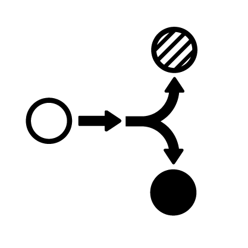

New lines - drivers
This can be a link: Lecture Note on Supervised Learning for more.
\[ \left( \sum_{k=1}^n a_k b_k \right)^{\!\!2} \leq \left( \sum_{k=1}^n a_k^2 \right) \left( \sum_{k=1}^n b_k^2 \right) \]
This is something else
Heading 2
This is the first paragraph.
In the ex1/
-
The data is loaded from
housing.data. An extra ‘1’ feature is added to the dataset so that \(\theta_1\) will act as an intercept term in the linear function.
Once you complete the exercise successfully, the resulting plot should look something like the one below:

(Yours may look slightly different depending on the random choice of training and testing sets.) Typical values for the RMS training and testing error are between 4.5 and 5.